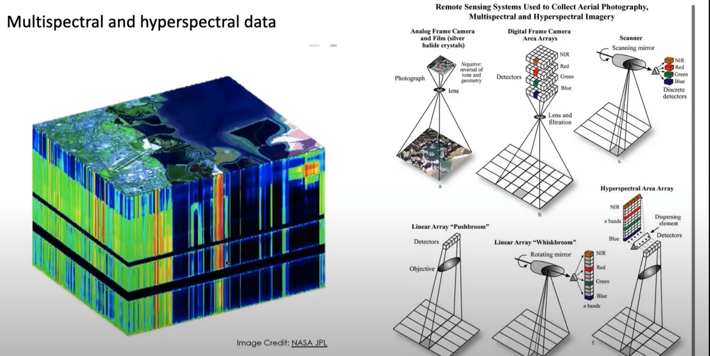
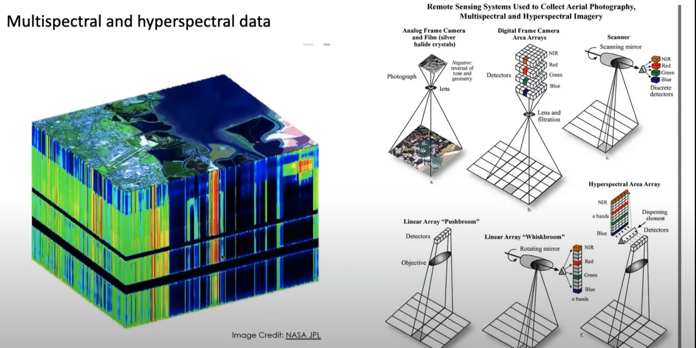

In this idea for the final project I want to classify minerals through satellite imagery. This can be done using spectroscopy to measure the light of a region and identify the chemical composition of that region. Through a sorting mechanism whether this is machine learning to learn different regions and their potential classification or manual we can understand the minerals on the surface. Data maybe hard to associate and connect since a lot of preprocessing tools will be needed such as converting the region to a image that can learn spectroscopy measurements and also training the model using CNNs as a way to identify the regions surface minerals which is a trial and error process in terms of constructing the architecture of the model. Another constraint is that satellite imagery is big in terms of scale, so using CNNs can be a challenge since we need our model to be both precise and accurate on a big scale.

